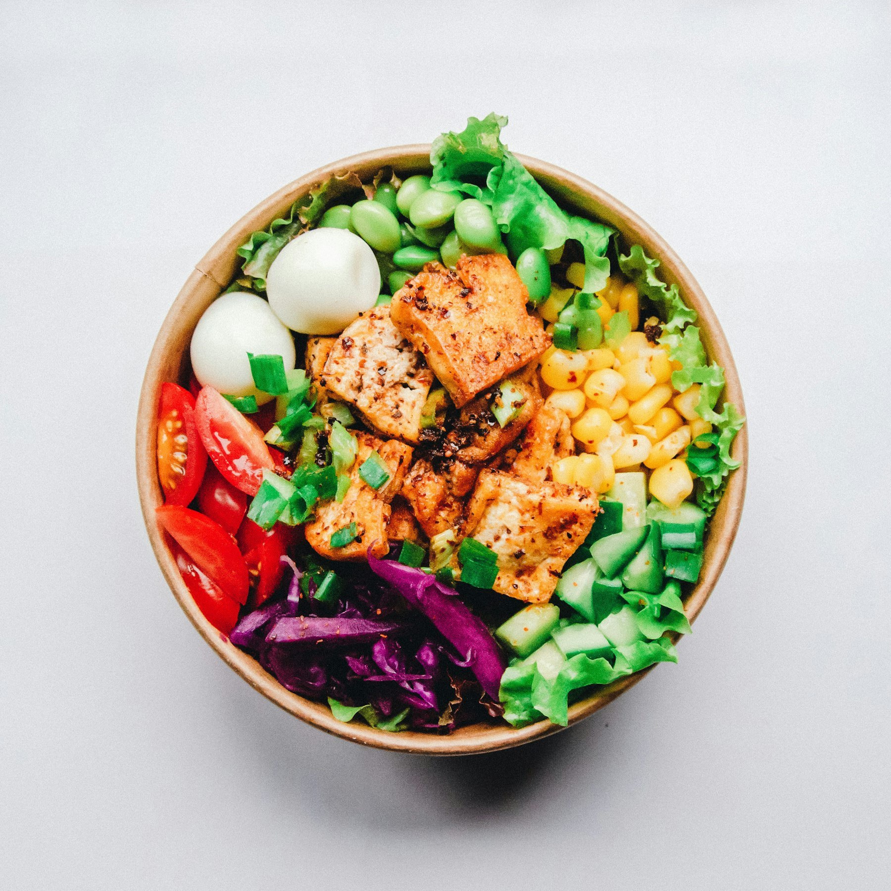

Visual Menu Clarity
Ingredient and allergen tags stay front and center during search and ordering.
ALLERGY-FIRST DINING
CanEatLah combines food preferences, allergy data, and restaurant ingredient transparency to help diners find safer meal options faster.
From ingredient-aware discovery to smart group dining, every decision stays allergy-aware.

Ingredient and allergen tags stay front and center during search and ordering.
Cuisine, diet style, spice, and sugar controls shape safer recommendations instantly.
Create groups and get one combined recommendation list for everyone at the table.
A complete workflow that supports trust, safety, and better dining decisions.
Survey-based preferences plus uploaded medical report support for allergy-aware suggestions.
Restaurant owners can publish ingredients, quantities, and probable allergen tags per item.
Admin review for users, reports, restaurants, and menu data to improve platform reliability.
Each role has dedicated flows and dashboards.
Preferences, allergy reports, group dining, restaurant search, and order tracking.
Create Diner AccountMenu management with ingredient transparency and order or reservation handling.
Join as RestaurantVerification, moderation, and core platform CRUD controls.
Create Admin Account